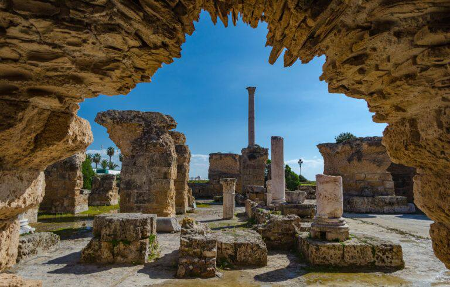

موقع قرطاج الأثري- تونس

كان اختيار مكان سياحي واحد فقط ليمثل تونس في هذة القائمة
أمرا في غاية الصعوبة فتونس غنية بالمقاصد
السياحية التي لا تقل احداها أهمية عن الأخري والشاهد
علي ذلك ملايين السياح ومحبي السفر حول العالم ممن
يختارونها سنويا وجهة لهم.
اذا كنت ممن يميلون الي التاريخ والتراث ففي
موقع قرطاج الأثري تستطيع أن تجد غايتك بكل سهولة.
تعاقبت الحقبات التاريخية والبزنطية والوندالية
والاسلامية ليضع بذلك بصمته بين سطور كتب التاريخ